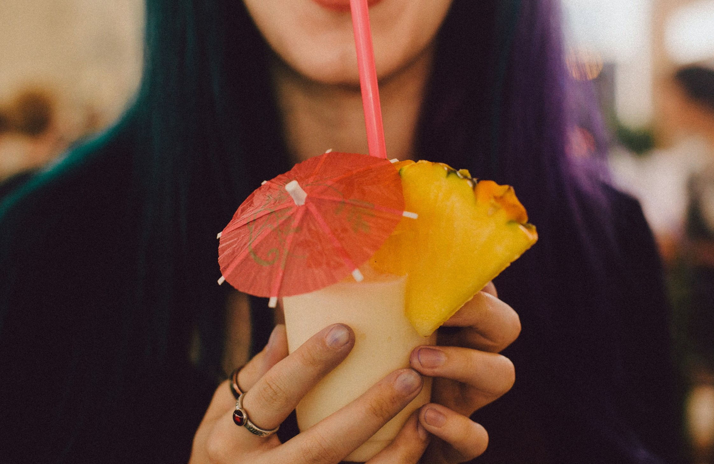

Bar goers have long turned to tiki bars as a means of entertainment and escapism. Hawaiian shirts, fruity drinks, and soft ukele notes create a relaxing, far away experience that patrons across generations continue to enjoy.

Tiki borrows its theme from the polynesian islands in the pacific.

Early tiki bars often served Cantonese, Hawaiian, and Polynesian inspired foods with elaborate drinks. A tradition many bars today continue.
Tiki mugs, mini umbrellas, flowers, and other garnishes contributed to the light-heartedness of the experience. Quintessential tiki mugs are usually ceramic and feature a sculptural design that is either Polynesian inspired, tropical, or nautical. Since the beginning, they have been a popular souvenir for bar-goers.

The popularity of tiki expanded after World War II and continued to gain traction through the early 1960s.

Tiki even made its way to Disney World, and is the predominant theme at Disney's Polynesian Village Resort. Opened in 1971, this site features classic Polynesian architecture and their own tiki bars, showing the reach and appeal of this genre.

Moving into the 1970s, the popularity of tiki began to decline. This trend continued until the genre saw a new-found revival in the 1990s.

Modern tiki fans, like Jeff "Beachbum" Berry helped in its resurgence through the publishing of books on the topic and classic cocktail recipes as well as the opening of new bars.
It's clear, tiki is here to stay.